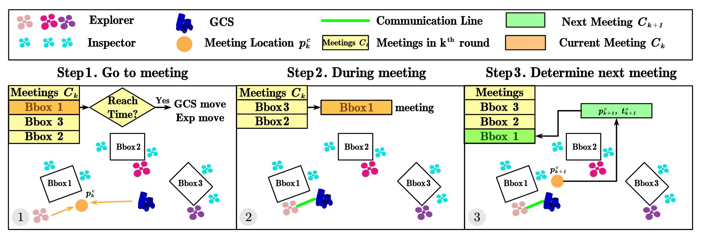
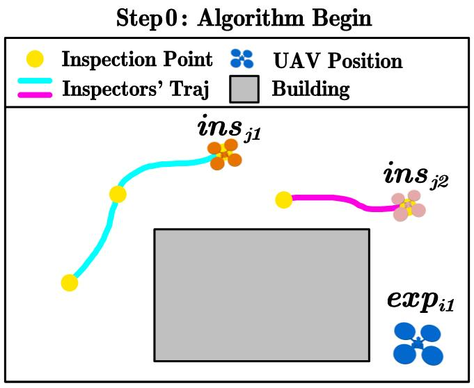
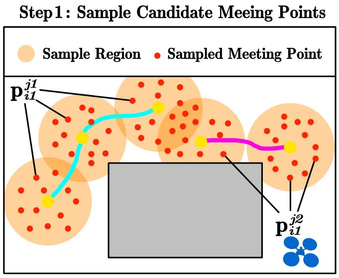
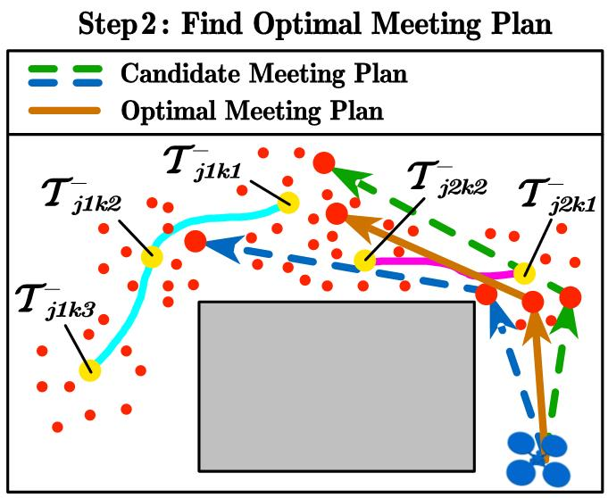
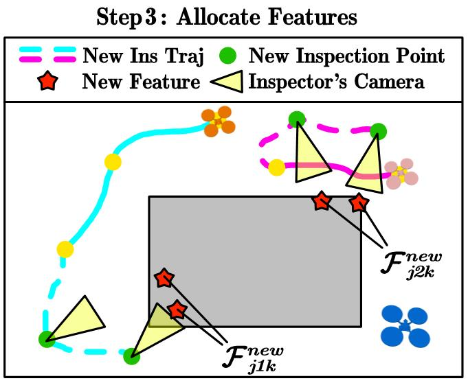

Abstract
Robotic fleets such as unmanned aerial and ground vehicles have been widely used for routine inspections of static environments, where the areas of interest are known and planned in advance. However, in many applications, such areas of interest are unknown and should be identified online during exploration. Thus, this paper considers the problem of simultaneous exploration and inspection of unknown environments and then interaction with moveable base station via heterogeneous robotic fleets. The robots are equipped with different sensors, e.g., long-range Lidars for fast exploration and close-range cameras for detailed inspection. Furthermore, global communication is often unavailable in such environments, where the robots can only communicate with each other via ad-hoc wireless networks when they are in close proximity and free of obstruction. This work proposes a novel planning and coordination framework called SLEI3D that integrates the online strategies for collaborative 3D exploration, intermittent communication, adaptive inspection and timely interaction which is tailored for large-scale and unknown 3D environments. To account for uncertainties w.r.t. the number and location of features, a multi-layer and multi-rate replanning mechanism is developed for inter and intra subgroups of robots, to actively meet and adjust their local plans. The proposed framework is validated via high-fidelity simulations of numerous large-scale missions with up to 48 robots and 126,000 cubic meters.
Overview Framework

The proposed method tackles above optimization problem via a multi-layer and multi-rate coordination framework that simultaneously co-optimizes the collaborative behaviors, including the coordination of gcs and subgroup within one explorer and several inspectors, and intra-group collaboration.
GCS to Sub-Group Layer

Sub-Group Layer



